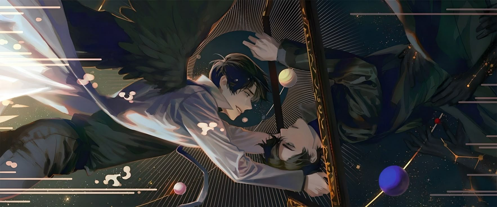

Kim Dokja is an ordinary office worker whose only comfort is a forgotten web novel that almost no one else reads. For years, he follows the story of an apocalyptic world ruled by cruel scenarios, impossible choices, and beings who watch human suffering as entertainment.
When he finally reaches the last chapter, fiction becomes reality. The subway stops. A monster appears. The first scenario begins. Cities fall, people panic, and the rules of the world are rewritten in front of his eyes.
As the only reader who knows how the story is supposed to unfold, Dokja uses his knowledge to survive. But the closer he gets to the original protagonist, Yoo Joonghyuk, and the other survivors, the more he realizes that this is no longer just a story to him.
Continue Reading →